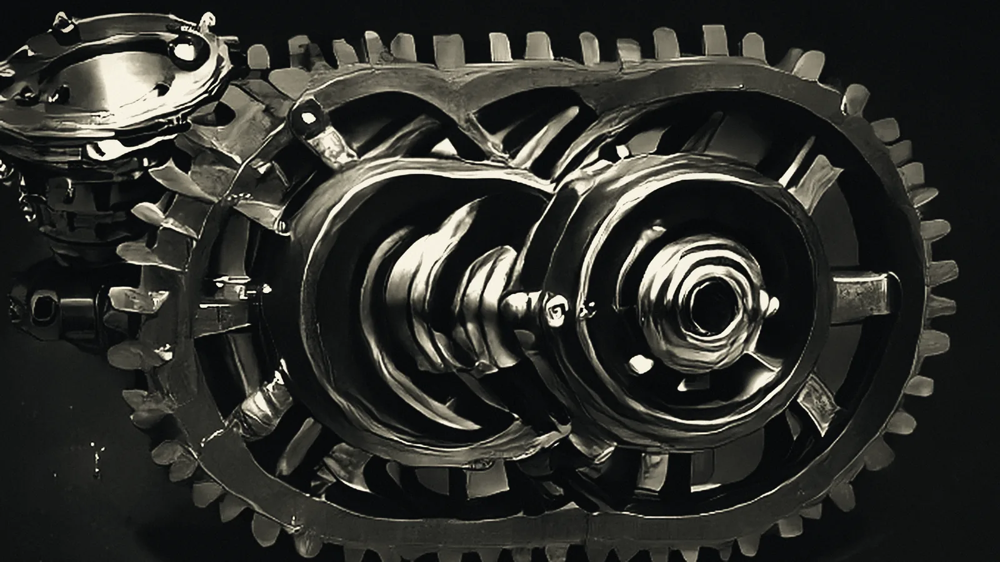
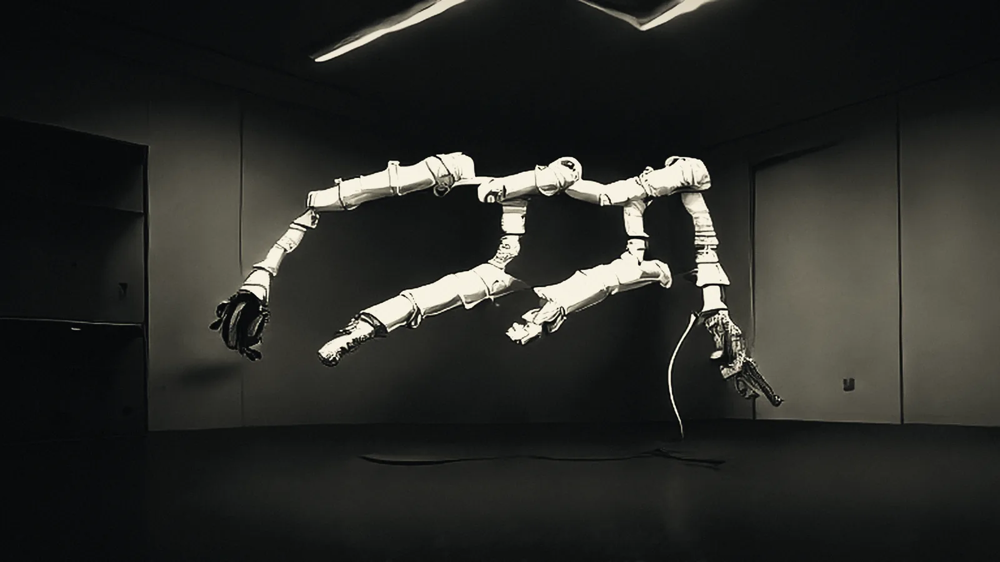
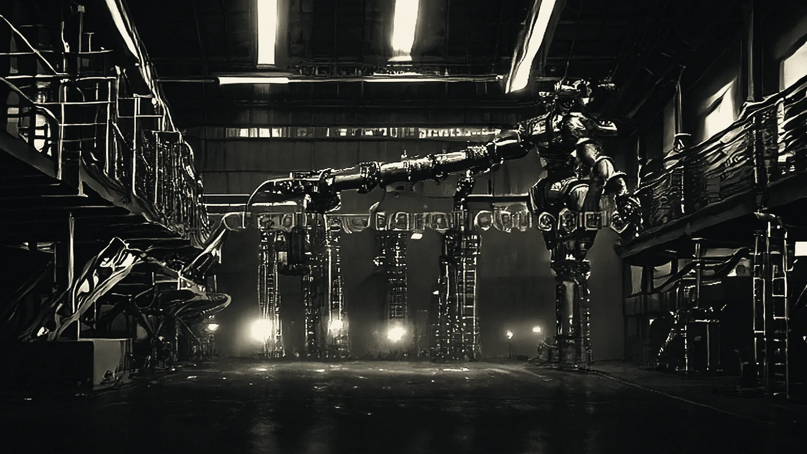
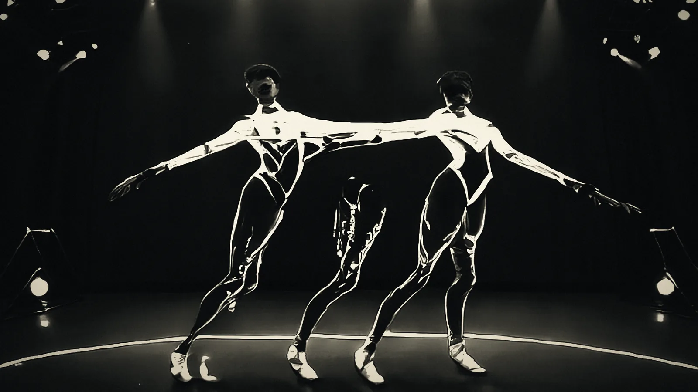
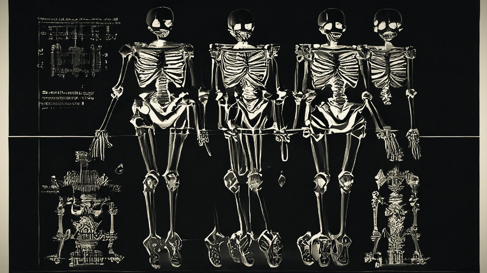

AR-1 moves on a 0.6 ms local policy and verifies the attempt against contact, torque and the friction cone. The 180 ms planner is summoned only when physics rejects the motion — never to re-derive what the body already knows.
Motion is not a reasoning problem until the body says it is.
A humanoid that re-plans every step spends its battery on arithmetic. AR-1 inverts the hierarchy: the cheapest controller that can produce a motion attempts it first, an independent verifier decides whether the result is admissible, and the expensive planner is called only on rejection.
The saving is not in the model. It is in what the model is never asked to do. Every attempt — including the ones that never reach the world — is written to an append-only ledger, clustered by motion pattern, and consolidated back into the reflex set. The reflex grows; the planner's share of the work falls.
i / The displaced volume
A body entering water displaces its own volume. Here the cheap tier displaces the cost of deliberation — same principle, different medium.
ii / The gate
Admissibility is a cost inequality, not a confidence score. Competence is estimated per pattern from recorded attempts.
iii / The verifier
It never sees which tier produced the motion. Its independence is the only reason the gate's savings survive contact with the world.
02 / Six beats
One control loop, told in the order it runs.
Plate 01Articulated hand / 22 dofMacro 1:1
Beat 01 / 06Displacement
The cheap tier goes first.
Every task — a step, a reach, a grasp — is attempted by the local policy at 0.6 ms. It is allowed to fail. The attempt is recorded whether it succeeds or not, because an attempt that is not recorded cannot be learned from.
Reflex
0.6 ms
Params
1.5 B
Recorded
always
Plate 02Rotary actuator / 320 n·m1:1.4
Beat 02 / 06The gate
The gate is a cost inequality.
Competence is estimated per motion pattern from the ledger. The cheap tier is admissible when its expected acceptance probability clears the break-even line: q > cS / cL. Below the line, escalation is cheaper than the attempt.
Fig. 2 — break-evencost / task vs. q
Condition
q > cS/cL
θs
0.35
Explore
ε 0.05

Plate 03Planetary set / μ 0.604:1
Beat 03 / 06The verifier
Physics adjudicates.
An independent verifier checks the candidate motion against contact normals, joint torque limits and the friction cone. It never sees which tier produced the motion. Its only job is to keep the false-accept rate low enough that the gate's guarantees survive contact with the world.
Fig. 3 — friction conecontact / force
Friction
μ 0.60
False accept
≤ 2%
Torque
320 N·m

Plate 04Planner reach / cell 031:1
Beat 04 / 06Escalation
The planner is summoned, not consulted.
On rejection, the full planner solves the failure — not the task. It receives the attempt, the verifier's objection and the pattern key. Mean cost 180 ms. The result is written back to the ledger, where it becomes evidence for the next gate decision on that pattern.
Planner
180 ms
Calls
on reject only
Writeback
ledger

Plate 05Gantry array / bay 031:1
Beat 05 / 06Consolidation
Failure becomes reflex.
Rejected attempts are clustered by pattern, consolidated into the reflex set, and injected back into the next episode. The update is checked for contraction: if the consolidated memory does not shrink the distance between successive states, the loop does not continue. Monotone, or nothing.
Stages
4
λ
< 1
Fmin
20

Plate 06Tracking suit / 41 markers120 hz
Beat 06 / 06Fixed point
The machine stops paying twice.
Each pattern's reflex share rises, its planner share falls, and the cost per completed motion converges. The end state is not a smarter planner. It is a planner that is asked for less — and a body that has learned the shape of the room.
Trend
q ↑
Cost
↓
Limit
fixed point

03 / Stack
Four stages. Two tiers. One append-only ledger.
The loop is deliberately boring: execute, capture, consolidate, inject. What changes is where the cost lands. The planner enters only through the reject edge, and every path — pass, fail, abstain — leaves a record.
Read left to right. Amber is the escalation path; bone is the reflex path. Nothing exits the ledger.
01Local policy attempts every motion in 0.6 ms; the attempt is recorded whether it succeeds or not.
02Verifier checks contact, torque and the friction cone without knowing which tier produced the motion.
03Planner is invoked only on the reject edge, and only to solve the failure.
04Ledger → consolidate → reflex set closes the loop; λ < 1 or the update is refused.
04 / Specification
AR-1, as built.
A research platform, not a product catalogue. Numbers below are measured on the current airframe with the standard 2.4 kWh pack, at 21 °C, on painted concrete.
Before AR-1 there was a coding agent. Same shape: cheap tier, competence gate, independent verifier, escalation. The 2026 audit of its deployment found 153 alternation decisions and zero cheap-tier attempts. Across 143 tasks, not one satisfied the gate's minimum-evidence condition.
The theory predicted it. Attempts that do not happen are not recorded, so the estimator can never learn why they did not happen — cold-start non-identifiability. The repair is an exploration floor that forces attempts at a fixed rate and records abstentions as evidence. AR-1 ships with ε = 0.05 from the first episode, not as an optimisation but as a precondition.
Audit reported in Milosavljević, Recursive Learning and the Archimedes Principle (2026), §7. Window 2026-09-13 → 2026-10-17; 1.049 × 10⁹ tokens.
Bring us a motion the planner keeps getting wrong.
AR-1 is a research platform. We take on a small number of deployment programmes each quarter — manipulation, legged locomotion, and inspection work in environments where a 180 ms pause is the difference between a grasp and a collision.